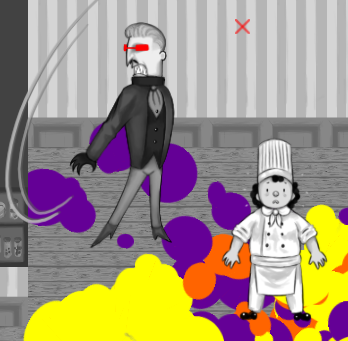

Nourriture Rapide


Nourriture Rapide est un projet qui a vu le jour durant le McGame Jam 2021, le thème était "conséquence inattendu". Pour ce projet je mettais proposé pour être le Game Designer. Pour ce jeu, nous sommes partit comme base un jeune cuisto gérant son restaurant qu'il doit protéger contre des légumes jusqu'à la fin du temps impartit. l'objectif était de programmer un jeu de type "beat them-all" avec deux types d'attaque, une attaque de dash et une attaque spéciale, celle-ci différente en fonction de l'arme ramassée dans le niveau.
Pour respecter le thème imposé, nous avons rajouté une barre qui collecte la quantité de saleté présent dans le niveau. Elle parait inutile au premier regard mais à la fin du temps impartît, un inspecteur arrive sur la scène, en fonction de la quantité de déchet dans le restaurant, la fin change. Si le restaurant est trop sale, le barre de saleté devient la barre de vie du boss.